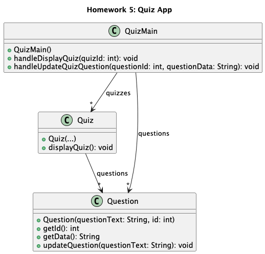

Homework 5: Quiz App
You are hired to finish an app that was started to build a quiz platform for teachers. Teachers need to create Questions, organize them into Quizzes, and revise a Question later. Because the same Question can appear in more than one Quiz, one revision must automatically be visible everywhere that Question is used. The platform must also locate Questions and Quizzes by their unique IDs.
Open the project in IntelliJ IDEA
- Download and extract HW5.zip.
- In IntelliJ IDEA, select Open and choose the extracted
HW5folder—the folder containingpom.xml. - If prompted, trust the project and allow Maven to load.
- Open the files under
src/main/java/hwk, complete the TODOs, then runhwk.RunAllTests.
Do not create a new IntelliJ project. Open the provided folder directly.
Your challenge
- Implement
Question,Quiz, andQuizMainusing the documented public method headers. - Create at least five Questions and three Quizzes, all with IDs.
- Put the same Question object, not copied text, in two Quizzes. Keep at least one Question unrelated to those Quizzes.
- Demonstrate that an ID-based update to the shared Question changes both Quiz displays, while an update to an unrelated Question leaves other Quizzes unchanged.
Design freedom
You choose private fields, collection types, lookup strategy, helper methods, and quiz contents. Both an ArrayList with a search and a HashMap lookup can be valid designs. The supplied JUnit tests check behavior, not your chosen internal collection.
Expected object model
Use the expected-solution UML diagram to understand the required public classes, operations, and object relationships. It shows the shared-Question relationship without prescribing private fields or a particular collection implementation.

Document your design with Javadoc
Write Javadoc for the public classes and methods in Question and Quiz. Javadoc explains what a class or method promises to do; it should describe behavior, not repeat the Java code line by line.
A Javadoc comment begins with /** and ends with */. Place it immediately before the class, constructor, or method it documents.
/**
* Updates this Question's text without changing its ID.
*
* @param questionText the new text to display
*/
public void updateQuestion(String questionText) {
// implementation
}Use @param for each parameter, @return when a method returns a value, and @throws only when you intentionally document an exception. In IntelliJ, type /** immediately above a declaration and press Enter to create a Javadoc template. To generate optional HTML documentation, use Tools → Generate JavaDoc…. Submit source comments, not generated HTML.
Quick reflection
Complete both questions in reflectionQuestions.txt and submit that completed file with your work.
- What did this homework show you about why sharing the same object can be useful?
- What design choice took you the longest to decide?
Submit
Submit your Java files, a UML class diagram of your implementation, and completed reflectionQuestions.txt to Gradescope. Include Javadoc for the public classes and methods in Question and Quiz. Do not alter the provided tests.